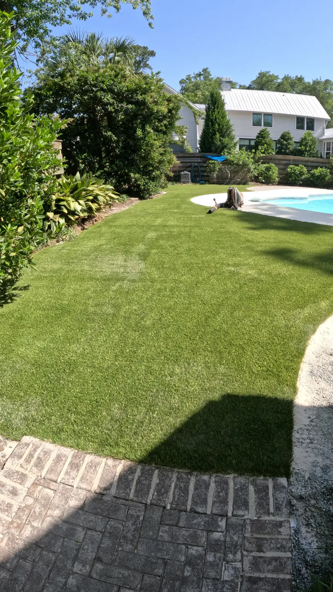
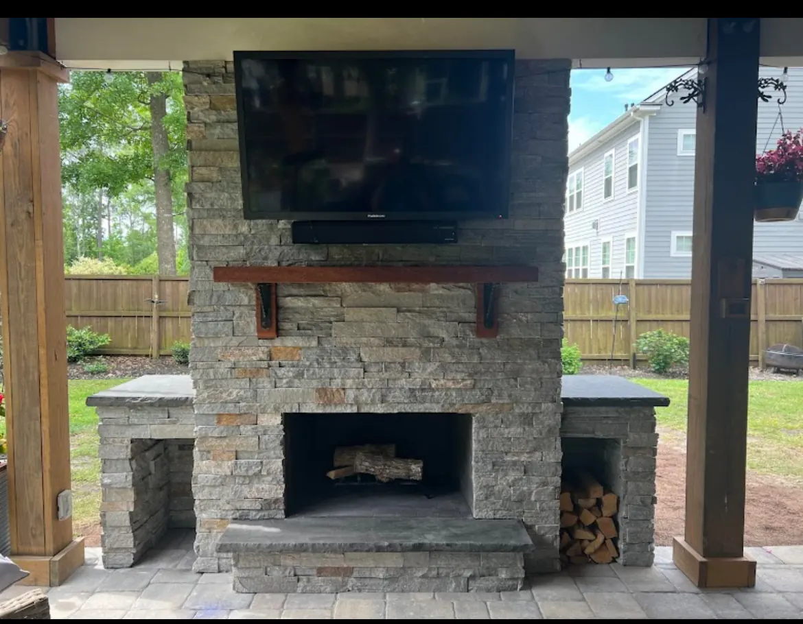
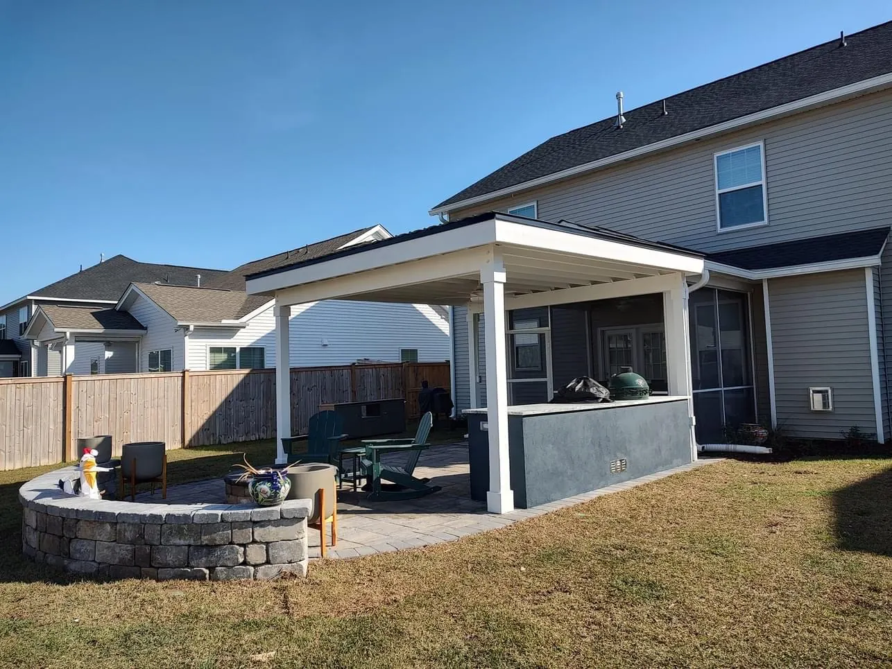

Landscape, Hardscape & Outdoor Living Services in Charleston, SC
What We Build
Custom Outdoor Spaces, Designed and Built by One Family
Cramers Landscaping designs and builds complete outdoor spaces across Charleston and the Lowcountry, from the plantings and drainage you walk past every day to the patios, pergolas and outdoor kitchens you gather in. Every project is designed around your home and how you live, and Doug and Zach Cramer are on the job from the first site visit to the final walkthrough.

01Landscape Installation
Plantings, irrigation, sod and turf, along with the drainage and grading that keep a Lowcountry yard healthy through heavy rain. Each planting plan is built around your soil, sun and coastal exposure so it establishes quickly and keeps looking good for years.

02Hardscaping
Paver patios, walkways, retaining walls, fireplaces and fire pits, pool decks and concrete work. We put the effort in below the surface, with proper base preparation and drainage, so the finished work stays level, solid and good-looking long after it is installed.

03Outdoor Structures
Outdoor kitchens, pergolas, pavilions, water features and outdoor showers, set on solid foundations. Our knowledge of classical architecture shapes the proportions and details of every structure, so it looks like it belongs to your home instead of a catalog.

04Landscape Design
It starts with design. We take the time to understand your property and your lifestyle before anything is built, then carry the plan through with landscape lighting that shows it off after dark and maintenance that keeps it at its best.
Not Sure Where to Start?
Tell us what you have in mind. Doug and Zach will visit your property, talk through your ideas and put together a design that fits your home, your budget and the way you live.